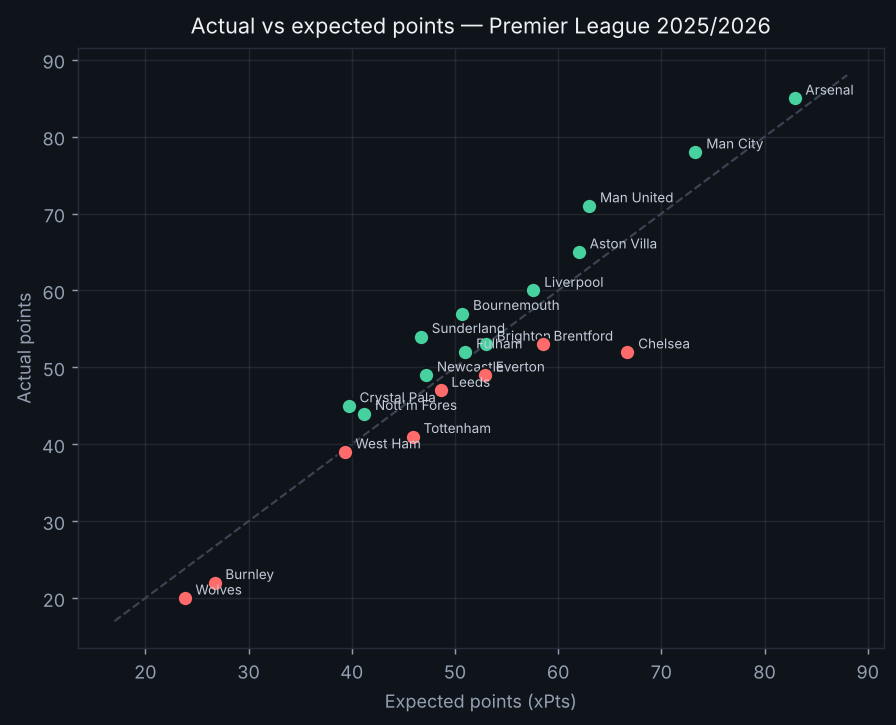

At a glance
0.7948
xG model ROC-AUC
pro range 0.78–0.82
100,379
xG shots trained
41.4%
Predictor accuracy
baseline 39.1%
0.214
Predictor RPS
baseline 0.2289
0.219
Home advantage
Premier League 2025/2026
League table — actual vs expected points · Premier League 2025/2026
| # | Team | P | W | D | L | GD | Pts | xPts | Diff | Form |
|---|---|---|---|---|---|---|---|---|---|---|
| 1 | Arsenal | 38 | 26 | 7 | 5 | +44 | 85 | 82.9 | +2.1 | WWWWW |
| 2 | Man City | 38 | 23 | 9 | 6 | +42 | 78 | 73.3 | +4.7 | DWWDL |
| 3 | Man United | 38 | 20 | 11 | 7 | +19 | 71 | 63.0 | +8.0 | WWDWW |
| 4 | Aston Villa | 38 | 19 | 8 | 11 | +7 | 65 | 62.0 | +3.0 | LLDWW |
| 5 | Liverpool | 38 | 17 | 9 | 12 | +10 | 60 | 57.6 | +2.4 | WLDLD |
| 6 | Bournemouth | 38 | 13 | 18 | 7 | +4 | 57 | 50.7 | +6.3 | DWWDD |
| 7 | Sunderland | 38 | 14 | 12 | 12 | -6 | 54 | 46.7 | +7.3 | LDDWW |
| 8 | Brighton | 38 | 14 | 11 | 13 | +6 | 53 | 53.0 | 0.0 | WLWLL |
| 9 | Brentford | 38 | 14 | 11 | 13 | +3 | 53 | 58.5 | -5.5 | LWLDD |
| 10 | Chelsea | 38 | 14 | 10 | 14 | +6 | 52 | 66.7 | -14.7 | LLDWL |
| 11 | Fulham | 38 | 15 | 7 | 16 | -4 | 52 | 51.0 | +1.0 | WLLDW |
| 12 | Newcastle | 38 | 14 | 7 | 17 | -2 | 49 | 47.2 | +1.8 | LWDWL |
| 13 | Everton | 38 | 13 | 10 | 15 | -3 | 49 | 52.9 | -3.9 | LDDLL |
| 14 | Leeds | 38 | 11 | 14 | 13 | -7 | 47 | 48.6 | -1.6 | DWDWL |
| 15 | Crystal Palace | 38 | 11 | 12 | 15 | -10 | 45 | 39.7 | +5.3 | LDLDL |
| 16 | Nott'm Forest | 38 | 11 | 11 | 16 | -3 | 44 | 41.2 | +2.8 | WWDLD |
| 17 | Tottenham | 38 | 10 | 11 | 17 | -9 | 41 | 45.9 | -4.9 | WWDLW |
| 18 | West Ham | 38 | 10 | 9 | 19 | -19 | 39 | 39.3 | -0.3 | WLLLW |
| 19 | Burnley | 38 | 4 | 10 | 24 | -37 | 22 | 26.7 | -4.7 | LLDLD |
| 20 | Wolves | 38 | 3 | 11 | 24 | -41 | 20 | 23.8 | -3.8 | LDLDD |
xPts = points the model expected from the same fixtures. Diff = actual − expected: green teams over-perform their underlying quality, red under-perform.

Predicted fixtures · Premier League 2025/2026 model
| Home | Away | Home win | Draw | Away win | Exp. goals | Likeliest |
|---|---|---|---|---|---|---|
| Arsenal | Aston Villa | 58% | 29% | 13% | 1.67–0.7 | 1-1 |
| Arsenal | Bournemouth | 78% | 16% | 6% | 2.9–0.84 | 2-0 |
| Arsenal | Brentford | 64% | 25% | 10% | 1.97–0.73 | 2-0 |
| Arsenal | Brighton | 68% | 24% | 8% | 2.07–0.66 | 2-0 |
| Arsenal | Burnley | 88% | 10% | 2% | 3.14–0.44 | 3-0 |
| Arsenal | Chelsea | 60% | 27% | 14% | 1.94–0.88 | 1-1 |
| Arsenal | Crystal Palace | 76% | 20% | 5% | 2.2–0.47 | 2-0 |
| Arsenal | Everton | 62% | 28% | 9% | 1.66–0.54 | 1-0 |
| Arsenal | Fulham | 72% | 21% | 7% | 2.32–0.69 | 2-0 |
| Arsenal | Leeds | 77% | 17% | 6% | 2.7–0.74 | 2-0 |
Fitted team strengths
| Team | Attack | Defence |
|---|---|---|
| Arsenal | +0.40 | -0.43 |
| Man City | +0.35 | -0.12 |
| Man United | +0.32 | +0.18 |
| Chelsea | +0.30 | +0.04 |
| Bournemouth | +0.26 | +0.45 |
| Liverpool | +0.16 | +0.14 |
| Leeds | +0.13 | +0.37 |
| Brentford | +0.11 | +0.06 |
| Aston Villa | +0.08 | -0.10 |
| Fulham | +0.06 | +0.22 |
| Newcastle | +0.05 | +0.32 |
| Brighton | +0.01 | +0.11 |
Expected Threat — ball progression
xT surface

Top ball progressors (total xT added)
| Player | Team | xT |
|---|---|---|
| Jorge Resurrección Merodio | Atlético Madrid | +3.49 |
| Gonzalo Castro Irizábal | Málaga | +2.77 |
| José Luis Morales Nogales | Levante UD | +2.60 |
| Pablo Sarabia García | Getafe | +2.44 |
| Toni Kroos | Real Madrid | +2.43 |
| Jonathan Viera Ramos | Las Palmas | +2.36 |
| José Antonio García Rabasco | Levante UD | +2.32 |
| Roberto Trashorras Gayoso | Rayo Vallecano | +2.28 |
| Éver Maximiliano David Banega | Sevilla | +2.26 |
| Filipe Luís Kasmirski | Atlético Madrid | +2.22 |
Sample outputs